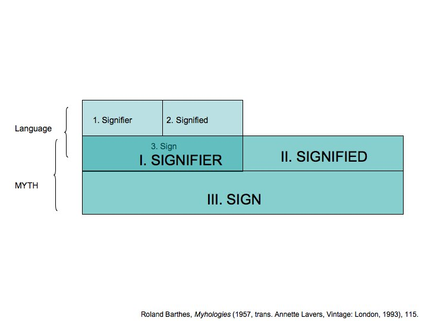
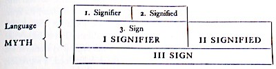

Semiotics


Senior Seminar in
Literary Criticism and Theory
TOPICS
employing/applying structural linguistics
figures of myth
archetype
semiotic triangle
semiotic chain
writerly/readerly texts
work/text
death
READINGS
Barthes, 1322-1331;
Frye, 1304-1315
HOMEWORK
Bring anonymized evaluation of the course thus far to class
Semiotics
9/16/10

